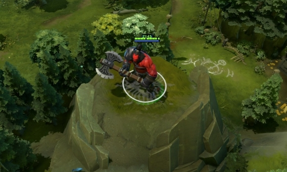
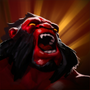
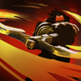
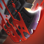

 斧王
斧王
背景故事
作为红雾军团的一名步兵，蒙哥可汗的目标是成为红雾军团的将军。在一场又一场的战斗中，他用血腥的战果证明了自己的价值。他毫不犹豫杀死上级的行为帮助他完成了晋升。在长达七年的千湖之境战役中，他用光荣的杀戮给自己带来了荣誉，他的声望比从前更耀眼了，但他身边的战友也在一个个地减少。在最终战胜的夜晚，蒙哥可汗宣布他为红雾军团的新将军，并冠以自身“斧王”的头衔。但他的军队却只有他一人，虽然许多人是战死的，但更多人则是死在斧王的刃下。不用说，现在大多数战士都不想由他领导。但这对斧王来说不算什么，因为他的军队只需要他一个人就够了。
| 狂战士的怒吼 斧王嘲讽附近的敌方单位，强迫他们攻击自己，同时获得额外护甲。 效果无视技能免疫。 魔法消耗：80/90/100/
冷却时间：16/14/12/1
|
战斗饥渴 激怒一个敌方单位，使他受到减速和持续伤害，直到他杀死一个单位或者持续时间结束为止。斧王从每个受战斗饥渴影响的敌人身上获得移动速度加成。 摧毁建筑也能移除该状态效果。 魔法消耗：75
冷却时间：20.0/15.0/
|
反击螺旋 受攻击时，斧王做出螺旋反击，对附近所有敌方单位造成纯粹伤害。 反击螺旋会在斧王受到攻击时触发。 魔法消耗：0
冷却时间：0.45/0.4/0
|
淘汰之刃 斧王寻找弱点来出击，直接秒杀低血量的敌方单位，血量如果过高则只造成一定伤害。当秒杀的是敌方英雄时，本技能不会进入冷却时间。同时斧王和附近友军单位获得移动速度加成。可用神杖升级。 魔法消耗：60/120/180
冷却时间：75.0/65.0/
|